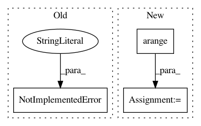

8eb4257e9cacb62fa5dcadf375a956483e5b1314,geomstats/geometry/skew_symmetric_matrices.py,SkewSymmetricMatrices,__init__,#SkewSymmetricMatrices#Any#Any#,7
Before Change
[[0, 0, -1], [0, 0, 0], [1, 0, 0]],
[[0, 0, 0], [0, 0, 1], [0, -1, 0]]])
else:
raise NotImplementedError(SkewSymmetricMatrices is only
implemented for n = 3)
def basis_representation(self, matrix_representation):
Parameters
After Change
self.basis = gs.zeros((dimension, n, n))
loop_index = 0
for i in gs.arange(n - 1): // rows
for j in gs.arange(i + 1, n): // columns
self.basis[loop_index, i, j] = 1
self.basis[loop_index, j, i] = -1
loop_index += 1
def basis_representation(self, matrix_representation):
Parameters
----------
In pattern: SUPERPATTERN
Frequency: 3
Non-data size: 3
Instances
Project Name: geomstats/geomstats
Commit Name: 8eb4257e9cacb62fa5dcadf375a956483e5b1314
Time: 2020-01-17
Author: stefan.heyder@gmail.com
File Name: geomstats/geometry/skew_symmetric_matrices.py
Class Name: SkewSymmetricMatrices
Method Name: __init__
Project Name: befelix/safe_learning
Commit Name: 87a3f9e47cbe9f8786d2e3907c1bd6d769dcdd22
Time: 2016-09-29
Author: fberkenkamp@gmail.com
File Name: safe_rl/triangulation.py
Class Name: Delaunay
Method Name: gradient_at
Project Name: scikit-learn/scikit-learn
Commit Name: 670b85c9e9cec05210e8596bc1fb9ca66787162f
Time: 2020-04-19
Author: 50599110+lrjball@users.noreply.github.com
File Name: sklearn/compose/_column_transformer.py
Class Name: ColumnTransformer
Method Name: get_feature_names